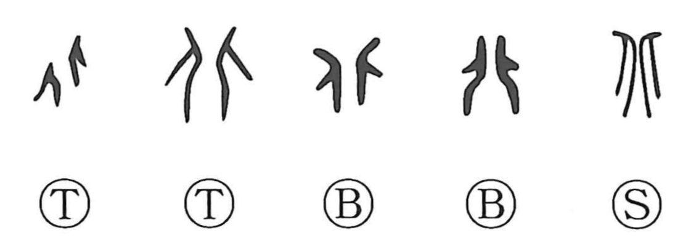

北

Kun: kita | On: hoku
north ・ back ・ turn one's back
Explanation
This character is a compound graph showing two human figures placed back to back, one facing right and the other left. From that posture it first conveyed the sense of the back and of turning away or going against; in compounds it could suggest flight, as in haiboku (“defeat”), literally showing one’s back to the enemy. In ritual the king sat facing south, so 北 named the direction behind him—the side one turns one’s back toward—hence “north.” After 北 came to designate the direction, the body-part meaning “back” was written as 背 by adding the flesh sign 月.